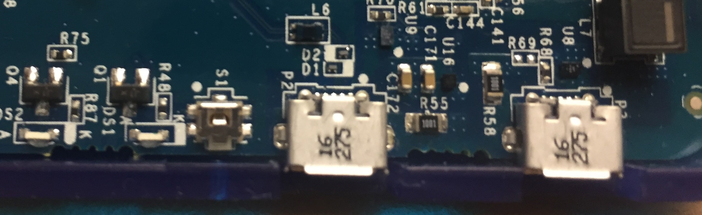
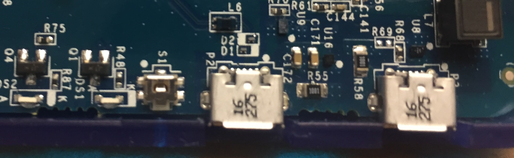
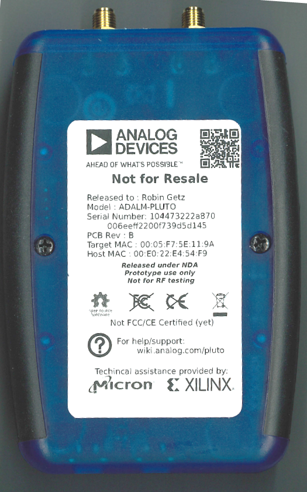
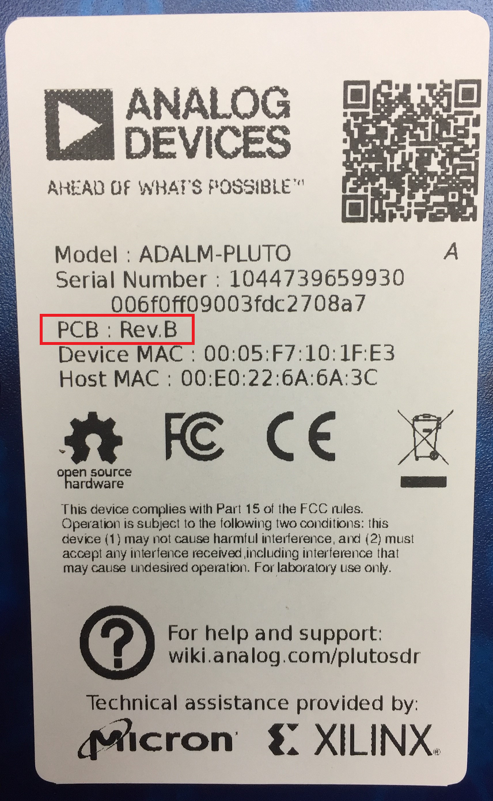
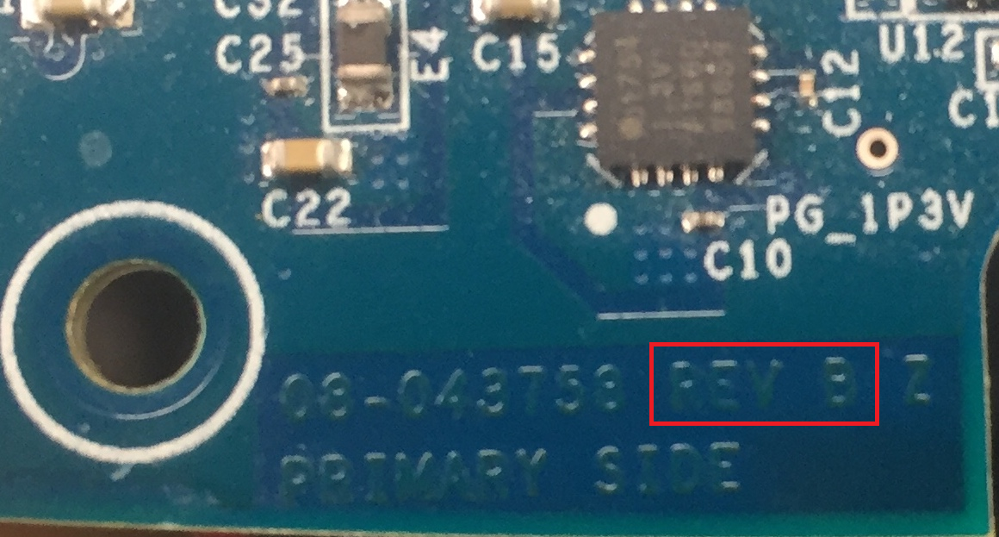
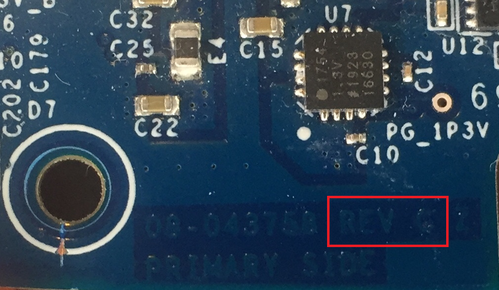
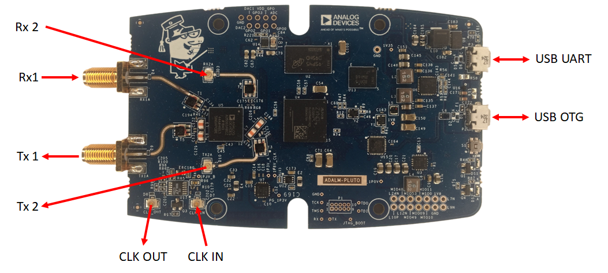
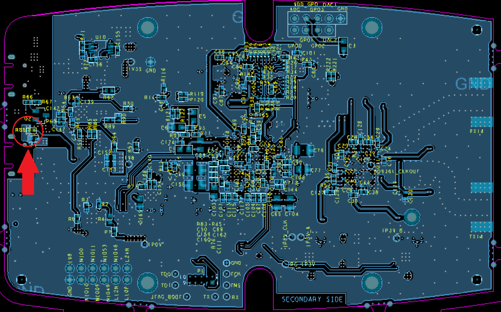

ADALM-PLUTO Hardware
Whether you want to understand the changes between revisions, or just understand how to probe the PCB, this is where all the information should be.
Connectors
The PlutoSDR includes a button (S1 on the PCB), and two USB connectors.
 

{kind=link}
The button can be defined by software, it is normally held on with a paper clip or thumb tack during power on to put the device into a recovery mode. It can be re-purposed to do other things.
The first USB connector (the middle one) is the USB OTG connector (can be the USB HOST connector (cabled to a USB peripheral), or the USB peripheral connector (cabled to a USB Host)).
The second USB connector (the one on the side) is for power only when running in Host mode.
Removing the case
{kind=link}
The plastic case comes off quite easily, with the removal of two black Phillips screws on the bottom of the case. This is a picture of the pre-production Rev B boards. The production version may be different. It will for sure be CE and FCC certified (already passed).
Removing the screws will allow you to take the top off the case, and expose the PCB.
If you want to remove the PCB, and place it on the table, we recommend that you attach Cylindrical Bumpers (also known as feet), on the PCB to protect the components on the bottom of the PCB. These are not included in the design, and must be purchased separately (as we don’t expect too many people wanting to do this).
Revisions
Different revisions of the PlutoSDR does not include any major functionality changes, and there is no difference for end users (there may be minor internal feature changes). While it is natural to want the “latest” version, there is no specified functionality changes. All revisions are:
1x Rx SMA, Tuning from 325 MHz to 3.8 GHz, 200 kHz - 20 MHz of instantaneous bandwidth
1x Tx SMA, Tuning from 325 MHz to 3.8 GHz, 200 kHz - 20 MHz of instantaneous bandwidth
1x USB 2.0 OTG
1x USB power adapter
Linux / libIIO based software stack, compatible with MATLAB, Simulink, GNU Radio, Python, and others.
Important
When you order from ADI’s authorized channels, you may get any revision listed below; there is no way to order one specific revision (it’s a single part number), so do not ask - it’s not possible. Normally inventory is managed via a FIFO (First In; First Out) mechanism, so the oldest inventory is shipped when an order is placed. However - warehouses have been known to misplace a box, and ship older inventory later.
If you really want to purchase a specific version - I’m sorry. There is no way. That’s just what you read in the paragraph above. Emailing anyone to ask for a specific version will just get the same answer, and will consume everyone’s time. Please don’t do it.
Which revision do I have?
There are three ways to tell which revision you have (and they should all match):
Look at the sticker
It’s printed on the back of the Pluto SDR (on the sticker) the below in Rev B:
{kind=link}
info.html page
In the file:///D:/info.html#version page, it will tell you (assuming that
your Pluto SDR drive is “D”):
{kind=link}
{kind=link}
Take it apart and look
The PCBs are slightly different (these pictures are the top sides).


If you look close, the revision of the PCB is etched in metal on the side (Zoomed in for clarity).
 {kind=link}
{kind=link}
Revision D
Revision C was never released, and was identical to rev C (minus 2 blue
wires [1]), so we are only releasing rev D info. Since firmware is the same
between rev D and C, the firmware identifies and recognizes rev D hardware as
rev C.
Revision D started showing up in the wild early 2021.
New Rev D features
There are new internal rev D features:
addition of internal U.FL connectors for:
second receive channel
second transmit channel
Clock input
Clock output (only a copy of Clock input, not functional for the internal clock)
USB UART
breakout pins for I2C and SPI
3.3V GPO levels
u.FL to SMA cables can be picked up for a few dollars at a variety of locations including Digkey, Mouser, AdaFruit or Sparkfun.
{kind=link}
The standard features - Rx1, Rx2, USB OTG work as previously. See how to add these to your units, check out how to set config settings.
Enable Dual Receive and Dual Transmit for the new revision of Pluto
Video
Enable Dual Receive and Dual Transmit for the new revision of Pluto
With a few more holes in the case, and a few dollars of cables, this should give you something like (this connects the additional Rx and Tx, and CLK input):

Download
Rev D Allegro Board File compressed). Get the Allegro FREE Physical Viewer to view.
There are few pictures of rev D in the Marketing section as well.
The 2nd Rx/Tx channel internal to the rev D is not test during production test. If it works - bonus! If it doesn’t work; Pluto is only advertised as a 1 Rx, 1 Tx radio, and that is guaranteed/production tested on each unit - and that is what you received.
Why Do a rev E?
Don’t know yet - we will keep track of the list here.
Revision B
Download
Important
Although the below files indicates the
Xilinx XC7Z010-1CLG225C is used in the PlutoSDR, it is actually the Xilinx
XC7Z010-1CLG225C4334 (a single core version before the 7007 was released).
We keep using the “special” version. If you are starting a new design - use the
XC7Z007S-1CLG225C.
Rev B Allegro Board File compressed). Get the Allegro FREE Physical Viewer to view.
There are few pictures of rev B in the Marketing section as well.
Why do a Rev C?
our “low-risk” OTG changes, caused problems, since we put the VBUS monitoring (R88) on the wrong side of the fuse, and the inclusion of the DC choke. While the DC choke reduces noise, and there is no DC difference between PGDN, and GND, on certain hosts, with certain operating systems, there can be a 250mV AC difference between PGND and GND. Since the analog comparators inside the Microchip USB3320 will be referenced to GND (quiet), it appears to toggle between host mode and device mode. A temp workaround was to change this resistor (R88) from the recommended USB spec of 1k to 24.9k. R88 can be found on the back side, underneath the USB connector.
We also had issue on ESD testing, and will be adding an ESD protection to the RF connector.
As a cost optimization (and feature enhancement), we may redo some of the power section (replacing the NCP339AFCT2G, ADM1177, with the LTC4413) - this is still TBD based on lab work to be done. One of the usability issues - is that the 2 NCP339AFCT2G devices are designed to be break before make - which causes the power supply to reset if you plug the ADALM-PLUTO into a PC (which causes it to boot), and then eventually a power supply (which causes the supply to disappear for a small time, and then re-appear). We don’t think this is a huge issue, but it would be enhance the usability. It would mean however, that we loose the ability to read USB voltage/current (which we currently do in the ADM1177.
Request to pin out the 2nd channel with pads/footprints.
{kind=link}
Revision A
Download
Why do a Rev B?
RF performance was bad. (EVM was poor, ~-32dBm; goal was -45dBm). This was due to the Rakon oscillator having no PPSR [2], and us powering the oscillator directly from a 1.8V digital rail (which was noisy). A LDO was dead bugged onto rev A, and it fixed the performance problem. We tried a few L/C & ferrites, but it was not as good as the LDO, so we added an ultralow noise LDO, the ADM7160ACPZN1.8 to the design.
RF performance was bad on certain PCs, even with with the added LDO (above). This was tracked down to to noise on the power supply. We added a power choke (DLW5BSM801TQ2L), and this went away, and we got much better results independent of platform.
Power supply noise was a little higher than we would have liked, and was effecting RF performance, so sync’ed the multiple switchers together to reduce input ripple. This also allowed us to reduce input capacitance on the entire unit.
were barely passing FCC, (due to noise @ 480MHz, which was also causing some RF issues at 480 MHz), so added DLW21HN900SQ2L (90Ω choke) on the USB lines.
swapped QSPI flash and DDR3L devices, to something not on the obsolete list.
based on early end user feedback, added some test points to unused pins to make extending the device a little easier.
based on early end user feedback, added On-The-Go support for USB. This was some minor power circuit, and monitoring VBUS, so was looked at as “low risk”
Datasheets
Here are some pointers to datasheets that are sometimes hard to find.
Before PlutoSDR
Like all things, PlutoSDR is a integration/copy/paste of previous known working platforms. There were a few different AD936x /Zynq platforms that were worked on that we borrowed things from:
FMCOMMS3 FMC Card, which includes the baluns/RF and connection back to the Zynq
FMCOMMS5 FMC Card, which is where we borrowed the (buggy) oscillator design, since the AD9363 can not be used with a crystal.
PicoZed SDR (which is were most of the Zynq and USB comes from).